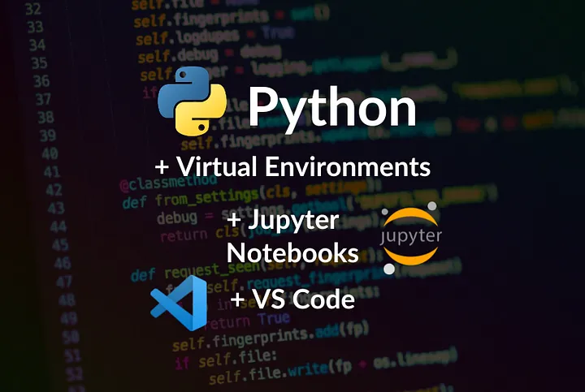
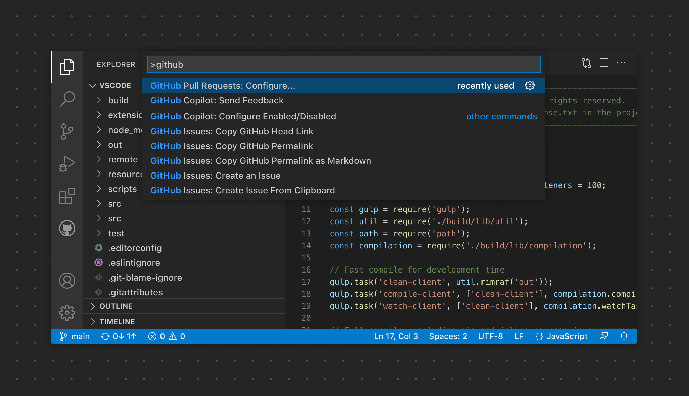
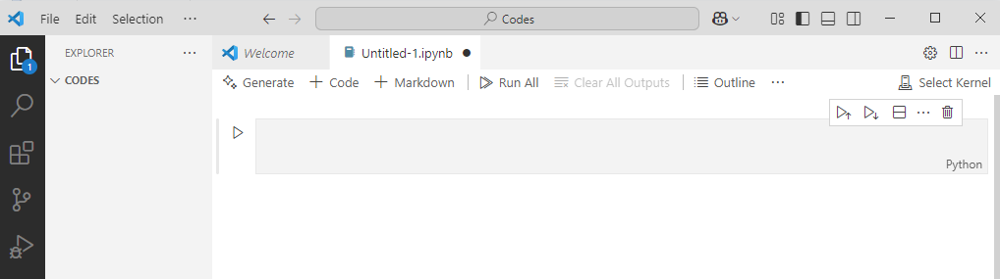
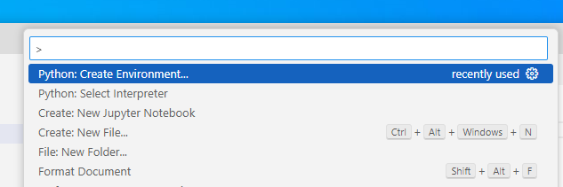
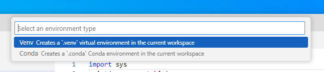
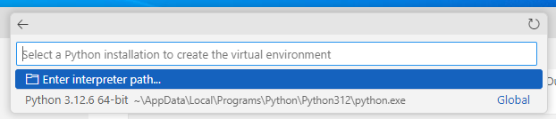
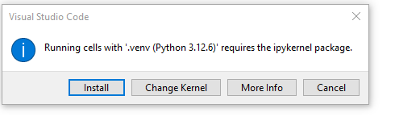
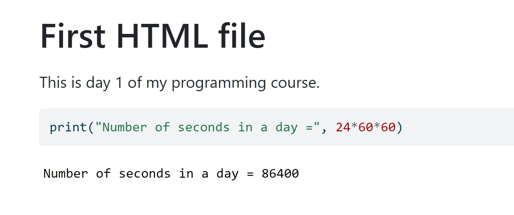

1 Setting up your environment with VS Code
1.1 Learning Objectives
By completing this lecture, you will be able to:
- Install and configure Visual Studio Code (VS Code) for Python programming.
- Leverage Jupyter Notebook within VS Code for your data science Python programming.
- Use Quarto to create HTML documents for your upcoming homework submissions.
1.2 Introduction to Visual Studio Code (VS Code)
Visual Studio Code (VS Code) is a free, open-source, and lightweight code editor developed by Microsoft. It’s widely used for coding, debugging, and working with various programming languages and frameworks. Here’s an overview of its key features and functionalities:
1.2.1 Core Features
- Multi-language Support: VS Code supports a wide range of programming languages out of the box, including Python, JavaScript, TypeScript, HTML, CSS, and more. Additional language support can be added via extensions.
- Extensibility: The editor has a rich ecosystem of extensions available through the Visual Studio Code Marketplace. These extensions add support for additional programming languages, themes, debuggers, and tools like Git integration.
- IntelliSense: Provides intelligent code completion, parameter info, quick info, and code navigation for many languages, enhancing productivity and reducing errors.
- Integrated Terminal: Allows you to run command-line tools directly from the editor, making it easy to execute scripts, install packages, and more without leaving the coding environment.
- Version Control Integration: Seamless integration with Git and other version control systems, allowing you to manage source code repositories, stage changes, commit, and view diffs within the editor.
- Debugging: Supports debugging with breakpoints, call stacks, and an interactive console for various languages and frameworks.
1.2.2 User Interface
- Editor: The main area to edit your files. You can open as many editors as you like side by side vertically and horizontally.
- Primary Side Bar: Contains different views like the Explorer to assist you while working on your project.
- Activity Bar: Located on the far left-hand side. Lets you switch between views and gives you additional context-specific indicators, like the number of outgoing changes when Git is enabled. You can change the position of the Activity Bar.
- Panel: An additional space for views below the editor region. By default, it contains output, debug information, errors and warnings, and an integrated terminal. The Panel can also be moved to the left or right for more vertical space.

- Command Palette: Accessed with
Ctrl+Shift+P(orCmd+Shift+Pon macOS), it provides a quick way to execute commands, switch themes, change settings, and more.

1.2.3 Extensions
- Language Extensions: Add support for additional languages such as Rust, Go, C++, and more.
- Linters and Formatters: Extensions like ESLint, Prettier, and Pylint help with code quality and formatting.
- Development Tools: Extensions for Docker, Kubernetes, database management, and more.
- Productivity Tools: Extensions for snippets, file explorers, and workflow enhancements.

1.2.4 Use Cases
- Web Development: VS Code is popular among web developers for its robust support for HTML, CSS, JavaScript, and front-end frameworks like React, Angular, and Vue.
- Python Development: With the Python extension, it provides features like IntelliSense, debugging, linting, and Jupyter Notebook support.
- Data Science: Supports Jupyter notebooks, allowing data scientists to write and run Python code interactively.
- DevOps and Scripting: Useful for writing and debugging scripts in languages like PowerShell, Bash, and YAML for CI/CD pipelines.
1.2.5 Cross-Platform
- Available on Windows, macOS, and Linux, making it accessible to developers across different operating systems.
Overall, VS Code is a versatile and powerful tool for a wide range of development activities, from simple scripting to complex software projects.
1.3 Installing Visual Studio Code
- Step 1: Download VS Code:
- Go to the official VS Code website and download the installer for your operating system.
- Step 2: Install VS Code:
- Run the installer and follow the prompts to complete the installation.
- Step 3: Launch VS Code:
- Open VS Code after installation to ensure it’s working correctly.
1.4 Setting Up Python Development Environment in VS Code using python venv
Unlike Spyder and PyCharm, which are specifically designed for Python development, VS Code is a versatile code editor with multi-language support. As a result, setting up the Python environment requires some additional configuration.
This step-by-step guide will walk you through setting up your Python environment in Visual Studio Code from scratch using venv.
1.4.1 Install Python
For this course, any version of Python 3 works. You don’t need to worry about having the latest version of Python, as long as you have Python 3 installed.
If Python 3 is already installed on your computer, you can skip this step.
- Download Python:
- Go to the official Python website and download the latest version of Python for your operating system.
- Ensure that you check the box “Add Python to PATH” during installation if it exists.
- Verify Python Installation:
Open a terminal (Command Prompt on Windows, Terminal on macOS/Linux) and type:
python --versionYou should see the installed Python version. If the command line doesn’t work, you might see an error message like:
python is not recognizedpython command is not found
This issue is often caused by Python not being added to the PATH environment variable. Please refer to the instructions to resolve this issue.
Note:
Before moving forward, ensure that the command python --version successfully prints the version of your installed Python. If it does not, you may need to troubleshoot your Python installation or add it to the PATH environment variable.
1.4.2 Install Visual Studio Code Extensions
- Open VS Code.
- Go to Extensions:
- Click on the Extensions icon on the sidebar or press
Ctrl+Shift+X.
- Click on the Extensions icon on the sidebar or press
- Install Python Extension:
- Search for the “Python” extension by Microsoft and install it.
- Install Jupyter Extension:
- Search for the “Jupyter” extension by Microsoft and install it.
1.4.3 Set Up a Python Workspace for this course
- Create a New Folder:
- Create a new folder on your computer where you want to store your Python code for this course.
- Open Folder in VS Code:
- Go to
File > Open Folderand select the newly created folder.
- Go to
1.4.4 Create a Notebook for your work
- In VS Code, go to
File > New Fileand selectJupyter Notebook. You should see a blank notebook namedUntitled-1.ipynbas in the figure below. The.ipynbextension stands for IPython Notebook. - :
Jupyter Notebook is an interactive platform that allows you to write code, add text, and create visualizations. Data scientists love using Jupyter Notebooks as an alternative to working directly with Python files because of their interactivity and flexibility.
1.4.5 Create a Python environment for your work - GUI method
When you start a Jupyter Notebook in VS Code, you need to choose a kernel. Kernel is the “engine” that runs your code within your Jupyter notebook, and it is tied to a specific Python interpreter or environment.
- What’s the difference between an interpreter and an environment? An interpreter is a program that runs your Python code. An environment, on the other hand, is a standalone “space” where your code runs. It’s like a container that holds its own interpreter and environment-specific libraries/dependencies, so each project can have its own environment setup without affecting others.
- Why do we prefer creating an environment for this course rather than using the global interpreter that comes with your Python installation? As a data scientist, you may work on multiple projects and attend different courses that require different sets of packages, dependencies, or even Python versions. By creating a separate environment, you can prevent conflicts between libraries, dependencies, and Python versions across your projects (dependency hell) and also ensure code reproducibility. It is always good practice to work within python environments, especially when you have different projects going on.
- Let’s create a Python environment for the upcoming coursework.

Create using
venvin the current workspace:
What is
venvIn Python,
venvstands for Virtual Environment, which is a tool used to create isolated environments for Python projects. This helps manage dependencies and avoid conflicts between different projects that may require different versions of Python or different packages.Choose a specific python interpreter for your environment:

Congratulations! A virtual environment named .venv has been successfully created in your project folder.
1.4.6 Choose the .venv environment as the kernel to run the notebook
For all your upcoming work in this project, you can select this environment to ensure a consistent setup.
1.4.7 Installing ipykernel for your notebook
Create a code cell in the notebook and run it. The first time you run a code cell, you will run into
 - After installing ipykernel, you should be able to run the following cell.
Code
import sys
print("Current Python executable:", sys.executable)Current Python executable: c:\Users\lsi8012\OneDrive - Northwestern University\FA24\303-1\test_env\.venv\Scripts\python.exesys.executable is an attribute in the Python sys module that returns the path to the Python interpreter that is currently executing your code.
1.5 Jupyter Notebooks in VS Code
After setting up your environment and successfully running your notebook using the created environment, follow this instruction to become familiar with the native support for Jupyter Notebooks in VS Code
1.5.1 Writing and executing code
Code cell: By default, a cell is of type Code, i.e., for typing code, as seen as the default choice in the dropdown menu below the Widgets tab. Try typing a line of python code (say, 2+3) in an empty code cell and execute it by pressing Shift+Enter. This should execute the code, and create an new code cell. Pressing Ctlr+Enter for Windows (or Cmd+Enter for Mac) will execute the code without creating a new cell.
Commenting code in a code cell: Comments should be made while writing the code to explain the purpose of the code or a brief explanation of the tasks being performed by the code. A comment can be added in a code cell by preceding it with a # sign. For example, see the comment in the code below.
Writing comments will help other users understand your code. It is also useful for the coder to keep track of the tasks being performed by their code.
Code
#This code adds 3 and 5
3+58Please refer to the Style Guide for Python Code to develop good coding habits from the start.
Markdown cell: Although a comment can be written in a code cell, a code cell cannot be used for writing headings/sub-headings, and is not appropriate for writing lengthy chunks of text. In such cases, change the cell type to Markdown from the dropdown menu below the Widgets tab. Use any markdown cheat sheet found online, for example, this one to format text in the markdown cells.
Jupyter Notebook shortcuts: Jupyter Notebook shortcuts are handy and quick. Here is a list of commonly used shortcuts for beginners:
- Shift + Enter: Run the cell and move to the next one.
- A: Insert a cell above.
- B: Insert a cell below.
- D, D: Delete the selected cell.
- Y: Change the cell to Code type.
- M: Change the cell to Markdown type.
1.5.2 Saving and loading notebooks
To save the notebook in VS Code, click on File and select Save As, or use the keyboard shortcut CTRL+S. Your notebook will be saved as a file with the extension .ipynb. This file will contain all the code and outputs and can be opened and edited with VS Code or any Jupyter-compatible environment.
To open an existing Jupyter notebook with VS Code: 1. Navigate to the file in your system’s file explorer. 2. Right-click on the file. 3. Select Open with VS Code.
1.6 Rendering notebook as HTML using Quarto
Quarto is designed for high-quality, customizable, and publishable outputs, making it suitable for reports, blogs, or presentations. We’ll use Quarto to print the **.ipynb* file as HTML for your assignment submission.
1.6.1 Installing and Verifying Quarto
Download and install Quarto from the official website.
Follow the installation instructions for your operating system.
Open your terminal within VS Code:
- Go to
Terminal->New Terminal.
- Go to
Run the following command to verify that Quarto and its dependencies are correctly installed:
quarto --versionYou should see the installed quarto version. If the command line doesn’t work, you might see an error message like:
- `quarto is not recognized` - `quarto command is not found`This issue is often caused by Quarto not being added to the PATH environment variable. Similar to how you added the Python path to the environment variable above, you need to add the Quarto path to the system environment variable so that the command can be recognized by your operating system’s shell.
On Windows, if you used the default installation path (without changing it), Quarto is installed in:
C:\Users\<USER>\AppData\Local\Programs\Quarto\bin
Note:
Before moving forward, ensure that the command quarto --version successfully prints the version of your installed quarto. If it does not, you may need to troubleshoot your quarto installation or add it to the PATH environment variable.
1.6.2 Converting the Notebook to HTML
Check the procedure for rendering a notebook as HTML here. You have several options to format the file. Here are some points to remember when using Quarto to render your notebook as HTML:
The
Raw NBConvertcell type is used to render different code formats into HTML or LaTeX. This information is stored in the notebook metadata and converted appropriately. Use this cell type to put the desired formatting settings for the HTML file.In the formatting settings, remember to use the setting
embed-resources: true. This will ensure that the rendered HTML file is self-contained, and is not dependent on other files. This is especially important when you are sending the HTML file to someone, or uploading it somewhere. If the file is self-contained, then you can send the file by itself without having to attach the dependent files with it.
Once you have entered the desired formatting setting in the Raw NBConver cell, you are ready to render the notebook to HTML. Open the terminal, navigate to the directory containing the notebook (.ipynb file), and use the command: quarto render filename.ipynb --to html.
1.7 In-class exercise
- Create a new notebook.
- Save the file as
In_class_exercise_1. - Give a heading to the file -
First HTML file. - Print
Today is day 1 of my programming course. - Compute and print the number of seconds in a day.
- Generate html from the notebook using Quarto
The HTML file should look like the picture below.
